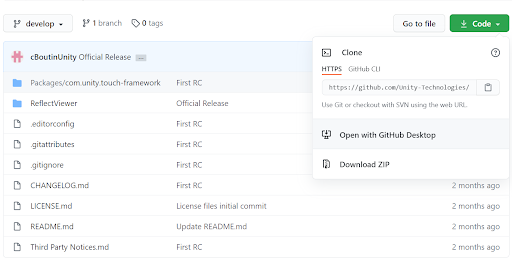
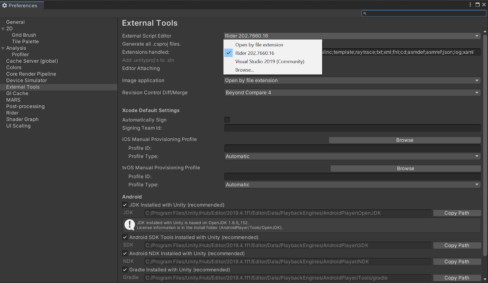

Start coding with Unity Reflect
This document provides the first steps to set up your environment to code with Unity Reflect.
Cloning the repository
Create a local clone of the following Git repository: https://github.com/Unity-Technologies/com.unity.reflect.viewer

For more information about how to clone a repository, refer to the GitHub documentation.
Opening a Reflect project in the Unity Hub
Open the Unity Hub and click Add.

Browse to the
UnityReflectfolder you created in Cloning the repository.Double-click on the project to open it.
Open a Reflect scene in the Unity Editor
Open the Reflect scene inside the Unity Editor hierarchy.

You can now click Play and upload new projects.
Open a C# project in the Unity Editor
Click Assets > Open C# Project.

Note: Make sure that you have selected the correct External Script Editor in Edit > Preferences > External Tools.
You can now access the whole scripts hierarchy and start making changes to the Reflect viewer. When you save your changes, Unity automatically recompiles it inside the Editor and show you any compiling errors in the Console (Window > General > Console).
Make a build
Go to File > Build Settings (or use the shortcut Ctrl-Alt-B) to access the Build Settings dialog.
Be sure to set up your target in Standalone. You can also select options for Development Build and Script Debugging.

You're ready to begin updating your custom Reflect viewer.